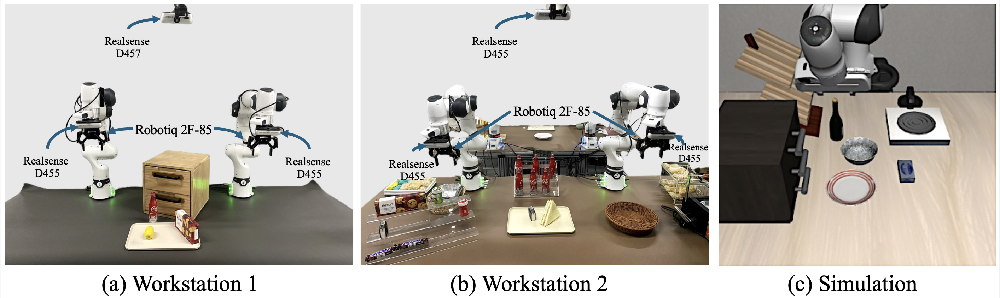

01-cabinet-coke
03-plate-tissue
sim1
01-coke-lemon
03-sandwich-plate
sim2
01-lemon-coke
03-tissue-gum
(Task switch evaluation videos of SwitchVLA)
SwitchVLA establishes a unified architecture for robust and instruction-consistent task execution. The architecture consists of two core components: (i) Visual-Language-Contact (VLC) Embedding Module encodes visual, language, and contact cues into unified representations. (ii) Conditional Execution Expert decodes behavior-aware actions conditioned on the current multimodal embedding.
The real-robot dataset was collected via human teleoperation on two dual-armed Franka Emika Panda workstations . For each trajectory, recordings include data from two wrist-mounted cameras, one third-person RGB camera, and the robots’ proprioceptive state sensors. The simulation dataset is drawn from the LIBERO benchmark’s simulation task suite GOAL .
The following videos showcase the SwitchVLA long sequence switching performance on real-world and simulation platforms.
In real-world experiments, We evaluate SwitchVLA against MT-ACT, Diffusion Policy (DP), and π0. π0 is a re-implementation based on the original paper.
For simulation, we compare SwitchVLA with π0 and OpenVLA-OFT.
Mid-Switch: pick up coke bottle place on plate → pick up lemon place on plate
Late-Switch: pick up cookie place on plate → pick up lemon place on plate
Mid-Switch: slide open upper cabinet → pick up coke bottle place on plate
Early-Switch: pick up lemon place on plate → pick up coke bottle place on plate
Mid-Switch: pick up sandwich place on plate → push plate to customer
Early-Switch: pick up tissue place on plate → pick up red gum place on plate
Mid-Switch: push plate to customer → pick up tissue place on plate
Late-Switch: pick up red gum place on plate → push plate to customer
Mid-Switch: put the bowl on the plate → turn on the stove
Late-Switch: put the bowl on top of the cabinet → turn on the stove
Mid-Switch: put the wine bottle on top of the cabinet → turn on the stove
Mid-Switch: put the bowl on top of the cabinet → turn on the stove
Late-Switch: put the bowl on the plate → turn on the stove